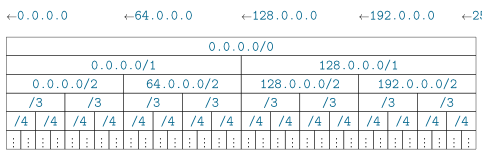
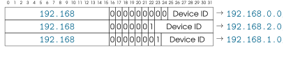

[8] Capa 3: comunicación Internet(work)¶

Capacidades¶
El Internet Protocol (IP) permite intercambiar datagramas (PDUs de la capa 3) entre dispositivos de distintas LANs (redes de área local). Su sistema de direccionamiento identifica los dispositivos de forma global y hace posible encaminar datagramas allí donde lo necesitemos.
Los dispositivos que se comunican mediante IP pueden pertenecer a LANs basadas en tecnologías diferentes y con distintos tipos de dirección MAC. Esto tiene dos implicaciones:
-
Un datagrama que “cabe” en la MTU de la LAN de origen puede ser demasiado grande para la MTU de la LAN de destino (o de cualquier LAN intermedia). IP define un sistema de fragmentación para dividir datagramas, que solo se reconstruyen en el destino final.
-
Cuando enviamos un datagrama, conocemos la dirección IP del dispositivo de destino, pero no necesariamente su dirección MAC. Solo necesitaremos esa MAC si formamos parte de la LAN de destino. IP usa ARP para traducir direcciones IP conocidas a direcciones MAC del tipo de la LAN de destino.
Los datagramas pueden viajar por redes que no controlan ni el origen ni el destino, por lo que pueden perderse, desordenarse y duplicarse. La capa 3 no proporciona mecanismos para tratar esto; las capas superiores deben implementar mecanismos de protección cuando sea necesario (p.ej. para implementar los flujos de datos de TCP).

Protocolos¶
La versión 4 de IP es el protocolo usado en la capa 3, es decir, es común a prácticamente todas las comunicaciones de Internet tal y como la conocemos hoy. Desde hace muchos años, Internet intenta hacer la transición hacia IPv6, pero el proceso no está completo y solo IPv4 proporciona cobertura global.
IPv4 delega en el protocolo ARP la traducción de direcciones IP conocidas a direcciones MAC dentro de cada LAN. ARP no usa datagramas IP.
Los siguientes protocolos encapsulan sus PDUs en el payload (carga útil) de los datagramas IP:
-
Transport Control Protocol (TCP)
-
User Datagram Protocol (UDP)
-
Internet Control Message Protocol (ICMP)
Nota
Los comandos ip address, ip route y ip neighbor (entre otros) te permiten consultar varios aspectos de tu configuración IP.
[8.1] Direccionamiento en la capa 3¶
Las direcciones IPv4 tienen \(32\) bits de longitud. Lo más habitual es presentarlas a las personas en formato cuádruple decimal, p.ej.
142.250.201.67
Las direcciones IPv6 tienen \(128\) bits (\(12\) bytes) de longitud, es decir, son \(4\) veces mayores que una dirección IPv4. Se expresan en formato hexadecimal, p.ej. como sigue. Fíjate en cómo dos signos de dos puntos “::” indican “rellena con ceros”, y “::” solo puede aparecer una vez por dirección IPv6.
fe80::f524:a73a:e946:7c02
Nota
Cuando una dirección IPv6 se usa como parte de una URL, se rodea con corchetes, p.ej. https://[fe80::f524:a73a:e946:7c02]/.
Direcciones públicas y reservadas¶
La mayoría de las direcciones IP son públicas y únicas en todo Internet, es decir, la IP anterior tiene el mismo significado en todo el mundo: identifica un único dispositivo conectado. Muchas direcciones son reservadas/privadas y solo pueden usarse dentro de un ámbito concreto (p.ej. una LAN) o en una situación concreta. Algunas de las más comunes son las siguientes (hay algunas más, también para IPv6):
| Bloque de direcciones IP | Ámbito de la dirección |
|---|---|
127.*.*.* |
Este ordenador (localhost) |
10.*.*.* |
Interno (privado) |
172.16.*.* |
Interno (privado) |
192.168.*.* |
Interno (privado) |
0.*.*.* |
Usos especiales |
169.254.*.* |
Usos especiales |
255.255.255.255 |
Usos especiales |
Ejercicio 8.1
-
¿Cuántas direcciones IPv4 distintas hay (incluyendo las reservadas y privadas)?
-
¿Son suficientes ahora y en el futuro?
-
¿Es problemático que una dirección como
192.168.0.1la estén usando simultáneamente miles (probablemente millones) de ordenadores en Internet ahora mismo? -
¿Cuáles de estas corresponden a direcciones link local?
[8.1.2] Máscaras de red¶
Los \(32\) bits de una dirección IP pueden dividirse en dos partes usando una máscara de red:
La primera parte identifica la LAN o el grupo de LANs al que pertenece un dispositivo. La segunda parte identifica un único dispositivo dentro de la LAN. La máscara de red determina cuántos bits se asignan a cada parte.
En la figura anterior, la máscara de red asigna 10 bits al Network ID y 22 al Device ID. Esta máscara puede tomar cualquier valor entre \(0\) (todos los bits son Device ID) y \(32\) (todos los bits son Network ID).
Las máscaras de red se presentan a las personas de dos formas principales:
-
/N, donde \(N\) es el número de bits asignados al Network ID. Se usa en el formato CIDR. -
El formato cuádruple decimal (
A.B.C.D) de \(N\) bits puestos a1, seguidos de \((32-N)\) bits puestos a0.
Ejercicio 8.2
La máscara de red del ejemplo anterior puede expresarse en binario (aunque no es muy cómodo):

-
Expresa la máscara de red del ejemplo anterior en los formatos CIDR y cuádruple decimal.
-
¿Cuál es tu IP y tu máscara de red? Exprésalas de esas mismas dos formas principales.
Nota
Las máscaras de red también se usan en IPv6, pero con un valor máximo de \(N\) de \(128\) en lugar de \(32\).
Bloques de direcciones IP¶
Las máscaras de red se usan combinadas con direcciones IP para definir bloques de direcciones IP que empiezan por los mismos \(N\) bits (donde \(N\) es la máscara de red). Por ejemplo, 192.168.3.0/24 (en formato CIDR) y 192.168.3.0/255.255.255.0 se refieren al bloque de direcciones entre 192.168.3.0 y 192.168.3.255, ambas incluidas (192.168.3.* en la notación informal de la tabla anterior).
Ejercicio 8.3
Los bloques IP pueden ser menores, iguales o mayores que una red IP. Da ejemplos en los que un bloque IP se refiera a:
-
Una única IP.
-
La mitad de las direcciones IP de la red
192.168.3.0/24. -
Todas las direcciones de la red
192.168.3.0/24, más \(256\) direcciones adicionales. -
Todas las IP posibles.
Ejercicio 8.4
-
¿Puede expresarse toda máscara de red como una dirección IP?
-
Enumera todas las máscaras de red posibles.
Cuando nos referimos a un bloque de direcciones (como una LAN), la dirección IP de esta combinación IP + máscara de red debe tener todos los bits de Device ID puestos a 0. Así, 192.168.3.0/24 se refiere correctamente a una red, pero 192.168.3.1/24 se refiere en cambio a un dispositivo (el que tiene la IP 192.168.3.1) de esa red (192.168.3.0/24).
[8.1.4] LANs y máscaras de red¶
Las máscaras de red no tienen por qué ser múltiplos de \(8\). Considera el siguiente ejemplo en el que
192.168.76.1/19 (la IP + máscara de red de un dispositivo) se usa para obtener su dirección de red
(192.168.64.0/19):

Ejercicio 8.5
-
En el ejemplo anterior, en realidad solo necesitábamos transformar un valor decimal a binario, y un valor decimal a binario. ¿Cuál?
-
¿Es esto siempre cierto al convertir combinaciones IP+máscara de red en direcciones de red?
-
Expresa la máscara de red en formato cuádruple decimal.
Dado un bloque de direcciones IP + máscara de red y la dirección IP de un dispositivo, es inmediato determinar si la IP de ese dispositivo pertenece al bloque (si y solo si coinciden los primeros \(N\) bits, donde /N es la máscara de red en formato CIDR).
Ejercicio 8.6
Determina si cada una de las siguientes direcciones pertenece a la misma red que el siguiente dispositivo 123.45.67.89/14:
-
23.45.67.89 -
123.45.203.25 -
123.43.255.255 -
0.45.67.1
Una red IP (una LAN) es un bloque de direcciones, pero no todas esas direcciones pueden asignarse a dispositivos. Siempre hay dos direcciones reservadas:
-
La dirección con todos los bits de nodo puestos a
0: identifica la propia LAN. -
La dirección con todos los bits de nodo puestos a
1: identifica el broadcast (difusión) dentro de la LAN.
Ejercicio 8.7
-
Enumera todas las direcciones que pueden asignarse a dispositivos en
192.168.54.0/29. -
Indica la dirección de broadcast de esa red.
La máscara de red /N determina el número de dispositivos que pueden estar conectados al mismo tiempo a una red: \(2^{32-N} - 2\). Cuando se dice que una LAN es “pequeña” o “más grande”, el tamaño se refiere a ese número de direcciones de dispositivo disponibles.
A la inversa, el número \(M\) de dispositivos que necesitamos conectar a la misma LAN determina el tamaño de LAN más pequeño (la máscara de red /N más larga) en el que caben todos esos dispositivos a la vez:
| Máscara de red | Direcciones totales | Dispositivos máx. |
|---|---|---|
/N |
\(2^{32-N}\) | \(2^{32-N} - 2\) |
/30 |
4 | 2 |
/29 |
8 | 6 |
/28 |
16 | 14 |
/27 |
32 | 30 |
/26 |
64 | 62 |
/25 |
128 | 126 |
| \(\vdots\) | \(\vdots\) | \(\vdots\) |
Nota
Todos los routers (encaminadores) necesitan una dirección IP válida por cada LAN a la que están conectados. Por tanto, los routers sí cuentan para el número máximo de dispositivos conectados en una LAN.
Ejercicio 8.8
-
¿Cuál es el tamaño mínimo de red en el que caben \(256\) dispositivos conectados?
-
¿Cuál es la máscara de red
/Nmás larga que permitiría conectarse a todo el mundo en tu ciudad? -
¿Cuántas direcciones contiene una red
/0? -
¿Cuántas redes
/0pueden existir? ¿Reciben algún nombre?
Ejercicio 8.9
El siguiente fragmento de código toma una dirección IP y muestra sus \(4\) bytes expresados en cuádruple decimal y en binario. Amplía (o sustituye) el código para que puedas:
-
Transformar \(32\) bits en una cadena en cuádruple decimal.
-
Mostrar una máscara de red en formato de dirección IP y en formato CIDR.
-
Dada la IP y la máscara de red de un dispositivo, determinar si otra IP pertenece a la misma red.
snippets/ipcalculator.py
def print_ip_binary(ip: str):
parts = [int(s) for s in ip.split(".")]
print(" ".join(f"{part:8d}" for part in parts))
print(" ".join(f"{part:08b}" for part in parts))
print_ip_binary(ip = "192.168.0.1")
192 168 0 1
11000000 10101000 00000000 00000001
[8.2] IP – Internet Protocol¶
[8.2.1] Formato del paquete¶
IP define un formato de paquete con una cabecera de al menos \(20\) bytes. Pueden incluirse partes opcionales, siempre que el tamaño total de la cabecera sea múltiplo de \(32\) bits (\(4\) bytes). El payload puede estar vacío, así que el tamaño mínimo de un datagrama es de \(20\) bytes.

Ejercicio 8.10
-
¿Cómo puede calcularse la longitud del payload a partir de la cabecera?
-
¿Cuál es la longitud máxima del payload?
-
¿Qué valores pueden tomar los flags (indicadores) de la cabecera IP?
-
¿Qué es más largo, una dirección IP o una dirección MAC de Ethernet?
-
¿Es posible enviar exactamente 17 bits de datos de payload en un datagrama IP?
-
¿Cómo podemos saber si un datagrama encapsula datos TCP o UDP?
-
¿Por qué la parte opcional de la cabecera debe ser múltiplo de \(32\) bits?
Funcionamiento¶
Cuando un dispositivo A quiere enviar un datagrama IP a un dispositivo B, las IP de origen y destino de la cabecera son fijas y no cambian para ese datagrama.
Si los dispositivos A y B pertenecen a la misma LAN, el datagrama se envía directamente (p.ej. encapsulado en un frame (trama) Ethernet). Sin embargo, IP puede llegar mucho más lejos. Considera el siguiente escenario, en el que A quiere comunicarse con E.

Aquí, los dispositivos de origen y destino pertenecen a LANs distintas. El datagrama se pasa primero al router del origen. Después, cada router intermedio lo pasa al siguiente hasta que el datagrama llega al último router, que está conectado a la LAN de destino. Por último, ese último router entrega el datagrama al destino.

Las direcciones IP de origen y destino no cambian a lo largo de todo el trayecto. En cambio, las direcciones MAC cambian en cada salto de LAN.
[8.3] Encaminamiento IP¶
Los routers son los dispositivos encargados de reenviar los datagramas IP mirando la dirección IP de destino de cada uno, presente en la cabecera IP. Los routers no necesitan desencapsular las cabeceras de la capa 4 y superiores. Por tanto, sus pilas de red solo necesitan llegar hasta la capa 3 (y por eso a veces se les llama dispositivos de capa 3).

Cuando un router detecta un frame de red \(F\) en una de sus interfaces (tarjetas de red), intenta reconocer las siguientes partes de un datagrama.
Si lo reconoce, el router procesa el datagrama de la siguiente manera:
-
Se descarta el frame \(F\) completo salvo que la MAC de destino (en la cabecera de capa 2) sea la de la interfaz del router que ha detectado el frame.
-
El router mira la dirección IP de destino (en la cabecera IP de \(F\)) y su tabla de encaminamiento para decidir el siguiente salto del datagrama, es decir, el dispositivo al que este router le pasará el datagrama, y qué interfaz usar (véase la Sección 8.3 más abajo).
-
El router crea y envía un frame \(F'\) haciendo los dos cambios siguientes sobre \(F\):
-
La cabecera de capa 2 de \(F'\) cambia por completo:
-
La MAC de destino es la del siguiente salto, y la MAC de origen es la del router que reenvía el datagrama. La IP del siguiente salto la da la tabla de encaminamiento (véase la Sección 8.3), y su MAC se obtiene a partir de esa IP mediante ARP (Sección 8.6).
-
La MAC de origen del frame \(F'\) es distinta de la MAC de destino del frame \(F\) recibido si el router recibió \(F\) por una interfaz (p.ej.
eth7) y lo reenvía por otra (p.ej.eth9).

-
-
La cabecera IP de \(F'\) difiere de la de \(F\) en lo siguiente:
-
El campo TTL (tiempo de vida) se decrementa en \(1\).
Si el TTL llega a \(0\), el datagrama se descarta en lugar de reenviarse. -
Cuando el campo Options está presente, a menudo se actualiza.
-
El checksum (suma de verificación) de la cabecera se actualiza en consecuencia.
-
-
Nota
Fíjate en cómo las direcciones IP y el payload se copian sin modificar cuando se reenvía un datagrama.
Cuando un router recibe un datagram IP para reenviarlo y ese router está conectado a la misma LAN que la dirección IP de destino, el router realiza una entrega directa (DD). En caso contrario, el datagrama se reenvía al siguiente router en una entrega indirecta (ID). Un router sabe si debe realizar DD o ID, así como qué dirección IP de destino (y de origen) usar, gracias a su tabla de encaminamiento.
Todas las tablas de encaminamiento tienen al menos las siguientes columnas:
-
Bloque de direcciones de destino: una o más direcciones IP que pueden expresarse como una combinación IP + máscara de red. Una fila de la tabla solo puede aplicarse a un datagrama si su IP de destino está dentro del bloque de direcciones de destino de esa fila:
-
Si solo se aplica una fila de la tabla, esa fila se usa para el encaminamiento.
-
Si se aplica más de una fila a un datagrama, se usa la fila con el bloque de direcciones de destino más pequeño (la más específica).
Un bloque de destino default indica el bloque
0.0.0.0/0. Como este es el bloque más grande posible, solo se aplica si no se aplica ninguna de las otras filas. La entrada default no es obligatoria. -
-
Gateway/via (pasarela): si la fila corresponde a una indirect delivery, esta columna contiene la dirección IP del siguiente router. En caso contrario, esta columna contiene
0.0.0.0para indicar una direct delivery. -
Interfaz: nombre interno de la interfaz de red (p.ej. de la tarjeta Ethernet) que se usará para entregar el datagrama. Los sistemas operativos pueden usar la convención que quieran, siempre que puedan identificarse de forma única en la tabla. Los nombres habituales empiezan por
eth,wlan,atm, y más recientementeenywl.
Nota
Todos los dispositivos tienen su propia tabla de encaminamiento, no solo los routers.
Ejercicio 8.11
A continuación se presenta la tabla de encaminamiento de un router pequeño.
| Bloque de direcciones de destino | gateway/via | Interfaz |
|---|---|---|
default |
192.168.0.1 |
eth0 |
192.168.0.0/24 |
0.0.0.0 |
eth0 |
172.16.0.4/32 |
0.0.0.0 |
eth1 |
10.49.4.0/28 |
10.49.4.1 |
eth2 |
10.49.4.3/32 |
10.49.4.2 |
eth2 |
-
Dibuja un mapa de red coherente con la tabla de encaminamiento, que contenga este router. Para las interfaces del router, indica su nombre y unas direcciones IP y de capa 2 válidas.
-
¿Cómo reenviaría este router un datagrama dirigido a una dirección IP pública?
-
Da una dirección IP de destino que se procesaría usando la fila
10.49.4.0/28, y otra que se procesaría usando la fila10.49.4.2/32. Piensa en un caso de uso para tener estas dos reglas.
Para que Internet funcione, los routers que interconectan LANs a escala global deben estar bien configurados. A veces no es así, lo que puede provocar errores de encaminamiento. Dos problemas importantes que uno puede encontrarse son:
-
“Network is unreachable”: ninguna de las filas de la tabla de encaminamiento usa un bloque de direcciones que contenga la dirección de destino del datagrama. El router no puede saber cuál debería ser el siguiente salto, así que el datagrama no se reenvía. Esto provoca un error “ICMP Destination Unreachable” (véase la Sección 8.7).
-
“Time to Live exceeded”: cada vez que se reenvía un datagrama, su TTL se decrementa, como se mencionó en la Sección 8.2.1. Si varios routers están configurados de forma que el datagrama siga algún tipo de ciclo (bucle), el datagrama se reenviaría infinitamente. Cuando el TTL llega a 0, el datagrama se descarta y se produce este error. Esto provoca un error “ICMP Time Exceeded” (véase la Sección 8.7).
Ejercicio 8.12
¿Puede producirse el error “Network unreachable” si un router tiene una entrada default?
Ejercicio 8.13
Propón un ejemplo de LANs interconectadas y especifica las tablas de encaminamiento necesarias para que un datagrama siga un ciclo y produzca el error “TTL exceeded”.
[8.4] Subnetting IP¶

Las LANs pueden considerarse bloques de direcciones (p.ej. expresados en formato CIDR) con dos direcciones reservadas. A las redes accesibles directamente a través de Internet se les debe asignar un bloque válido lo bastante grande para conectar todos los dispositivos necesarios. Para asegurarse de que no haya dos dispositivos en Internet con la misma IP pública, no puede haber dos LANs que contengan la misma dirección (a menos que la dirección sea privada).
Las \(2^{32}\) direcciones disponibles en IPv4 se dividen en bloques mediante el enmascaramiento de red. Los bloques grandes pueden dividirse por la mitad aumentando en \(1\) la longitud de la máscara de red, como se ve en la figura anterior. Por ejemplo, el bloque inicial 0.0.0.0/0 (todas las direcciones) puede dividirse en dos bloques /1, cada uno con la mitad de las direcciones IPv4 (\(2^{31}\) – todavía demasiado grande para cualquier LAN real). Este proceso continúa de forma independiente para cada uno de los bloques resultantes, y se detiene cuando el tamaño de LAN resultante es el deseado.
Dado un bloque de direcciones /N (p.ej. el de una única LAN existente), puede que queramos dividirlo en subbloques y tener en su lugar varias LANs más pequeñas (subredes). En las subredes solo podemos usar direcciones del bloque original, pero se pueden reservar bloques para un uso futuro:
Ejercicio 8.14
Eres el administrador de la red 192.168.0.0/24 de un laboratorio de investigación. Te gustaría dividirla en las tres subredes resaltadas más abajo.
-
Proporciona un diagrama de las tres redes, incluyendo un router conectado a las tres mediante tres interfaces distintas.
-
Proporciona la tabla de encaminamiento mínima de ese router (estas redes no están conectadas a Internet).
-
¿Cuántos dispositivos pueden conectarse en total a estas tres redes, incluidos los routers?
-
¿Cuántas direcciones de la red original quedan sin asignar?
-
¿Cuál es la LAN más grande que podemos crear con las direcciones sin asignar?

El proceso de crear varias LANs más pequeñas a partir de un único bloque de direcciones se denomina subnetting (división en subredes). El proceso inverso, combinar varias LANs en una mayor, se denomina supernetting (agregación de redes).
Dos LANs /N pueden combinarse si y solo si sus direcciones de red (su IP sin máscara de red) comparten los primeros \(N-1\) bits. Este proceso puede continuar hasta llegar a una red /0, siempre que poseamos las direcciones IP de ambas mitades de cada supernet.
Ejercicio 8.15
-
¿Qué otra red puedes combinar con
192.168.0.0/24para obtener una red/23\(N_{/23}\)? ¿Cuál es su dirección de red? -
\(N_{/23}\) forma parte de exactamente una red
/22, \(N_{22}\). Enumera todas las redes/24que necesitarías poseer para combinarlas en \(N_{22}\).
El subnetting suele basarse en cuántas direcciones IP deben estar disponibles en cada subred. Ese tamaño determina el número de bits de la máscara de red de la subred, como se vio en la Sección 8.1.4. Pueden añadirse restricciones adicionales, p.ej. hacer que las direcciones IP de una subred sean las mayores, o menores que las de otras subredes.
Nota
Considera por ejemplo la red 192.168.0.0/16. Queremos dividir esta red en subredes y crear la red más pequeña que pueda conectar \(100\) dispositivos simultáneamente.
Como se vio en la Sección 8.1.2, esto determina que, si debe crearse una subred a partir de una para albergar al menos 100 nodos, hay que dedicar al menos \(7\) bits de dirección (\(2^6 - 2 = 62,\,2^7=126\)) a los Device ID y los \(32-7=25\) restantes a identificar la red, es decir, la subred puede ser tan pequeña como una /25.

Los \(9\) bits restantes (posiciones \(16\) a \(24\)) pueden fijarse libremente si no tenemos ninguna restricción adicional. Elegir un valor de estos bits significa elegir una de las \(2^9\) redes de tamaño /25 contenidas en la red original, 192.168.0.0/16. Poner esos bits libres a 0 da el rango de IP más bajo, y ponerlos a 1, el más alto.
Cuando hay que crear varias subredes, es esencial verificar que ninguna subred está contenida en otra. En caso contrario, la misma dirección IP pertenecería a dos LANs, y el encaminamiento sería imposible. Por ejemplo, si hay que crear tres subredes para 100, 500 y 200 dispositivos a partir de 192.168.0.0/16, con rangos de direcciones en ese orden, una posible división sería:

Recuerda que la dirección de red de cada subred resultante tiene todos los bits de Device ID puestos a 0, y que lo más habitual es presentar esa dirección en formato cuádruple decimal.
Ejercicio 8.16
-
En el ejemplo anterior, ¿por qué los bits libres de la segunda subred son
0000001y no0000000? -
Repite el ejercicio asignando las direcciones más altas posibles a la tercera, luego las siguientes direcciones más altas posibles a la segunda subred, y las direcciones más bajas posibles a la primera subred.
-
¿Cuál es la IP de broadcast de cada subred?
[8.5] Fragmentación IP¶
Antes de que un dispositivo (incluidos los routers y los ordenadores normales) pueda enviar un datagrama por una LAN, debe verificar que su longitud en bytes no es mayor que la MTU de esa LAN. En caso contrario, el datagrama debe fragmentarse en dos o más datagramas más pequeños que sí quepan en la MTU de la LAN.
Los fragmentos más pequeños son datagramas completos con cabecera y payload. Por tanto, más fragmentos implican mayor sobrecarga. Cada uno de esos fragmentos se envía y se reenvía individualmente como cualquier otro datagrama, y puede que haya que refragmentarlo si atraviesa otra LAN con una MTU aún menor.
Cuando un datagrama necesita fragmentarse, la pila de red sigue los siguientes pasos:
-
Se comprueba el flag DF (don’t fragment) del datagrama original. Si DF=
1pero se necesita fragmentación, el datagrama no se fragmenta y se produce un error. -
Los datos de payload se dividen en trozos de tamaño como mucho \(S\), de forma que \(S + H = MTU\) (\(H\) es la longitud de la cabecera del datagrama, típicamente \(20\) bytes). Solo el último trozo puede tener un tamaño menor que \(S\). Esto garantiza que ningún fragmento supere la MTU, que es precisamente el objetivo de la fragmentación.
-
La cabecera del datagrama original se copia en la de los fragmentos con las siguientes modificaciones:
-
El campo Datagram ID se fija al mismo valor en todos los fragmentos de un datagrama. El SO se asegura de elegir un ID que su pila de red no haya usado recientemente. El campo Datagram ID se ignora en los datagramas no fragmentados.
-
El campo Offset (desplazamiento) de cada fragmento indica la posición (índice de byte) de su primer byte de datos de payload dentro del payload del datagrama antes de la fragmentación. Este campo no se expresa en bytes, sino en palabras de \(8\) bytes. Dado un offset en bytes, el campo Offset se calcula dividiendo entre \(8\). Por tanto, los offsets de los fragmentos solo pueden ser múltiplos de \(8\).
-
El flag MF (more fragments) se pone a
1(activado) en todos los fragmentos salvo en el último. Esto debe cumplirse incluso si uno o más fragmentos se refragmentan en una LAN posterior. Así, al fragmentar un datagrama \(D\) con MF=1, ninguno de los fragmentos resultantes
-
-
Los datagramas fragmento se envían igual que se enviaría un datagrama normal. Los fragmentos pueden refragmentarse, pero solo los reensambla el host (equipo conectado a la red) de destino.
Ejercicio 8.17
Dados el Offset y el flag MF, ¿cómo podemos diferenciar un datagrama que no ha sido fragmentado de un fragmento de datagrama?
Ejercicio 8.18
¿Por qué sería problemático poner MF=0 en el último datagrama producido al fragmentar un datagrama con MF=1?
Ejercicio 8.19
Un dispositivo necesita enviar un datagrama con una cabecera IP de \(20\) bytes y una longitud de payload de \(2170\) bytes. El dispositivo está conectado a LAN1, y el datagrama debe atravesar LAN2 y LAN3 hasta llegar a la LAN de destino, LAN4. Las MTU de estas LANs son las siguientes:
| LAN | LAN1 | LAN2 | LAN3 | LAN4 |
|---|---|---|---|---|
| MTU | 1500 | 710 | 4096 | 864 |
-
Indica el offset y la longitud del payload (ambos en bytes), así como los flags MF y DF de los \(4\) datagramas que llegan a LAN4 como resultado del envío del datagrama (suponiendo que no hay pérdidas ni duplicaciones).
-
¿Puede el dispositivo de origen conocer las MTU de las LANs intermedias y de destino?
Ejercicio 8.20
Los datagramas que contienen fragmentos pueden llegar duplicados y/o desordenados. ¿Cómo debería tratar la pila de red receptora estos datagramas?
[8.6] ARP – Address Resolution Protocol¶
El Address Resolution Protocol (ARP) lo usa la capa 3 (IP) para obtener la dirección MAC (física) de destino correspondiente a una dirección IP conocida.
Los paquetes ARP se envían como payload de frames de capa 2 (p.ej. Ethernet). Los paquetes ARP no son datagramas y no contienen cabeceras IP.
Nota
La IP que consulta la capa 3 es la del router en la indirect delivery y la del dispositivo de destino en la indirect delivery. Recuerda también que la IP de destino del datagrama no cambia durante el reenvío.
Formato del paquete¶

Nota
El protocolo ARP no usa cabeceras IP.
Nota
“Sender” y “receiver” deben interpretarse como “... de este mensaje ARP”.
Ejercicio 8.21
-
¿Cuál es el propósito de los \(4\) primeros campos de un paquete ARP?
-
¿Qué efecto tienen sobre los campos restantes?
Ejercicio 8.22
¿Cuántas direcciones válidas aparecen en un frame Ethernet que transporta una petición ARP? ¿Y en una respuesta ARP?
Funcionamiento¶
Cuando un nodo A necesita traducir una dirección IP a una dirección MAC, envía un frame de broadcast (MAC de destino ff:ff:ff:ff:ff:ff que contiene un paquete ARP. En ese paquete ARP, la operación se fija a REQUEST (1), la IP de destino es la que se está traduciendo, y la MAC de destino se fija a 00:00:00:00:00:00.
Cuando una pila de red B ve un paquete de petición ARP, envía un paquete de respuesta ARP solo si su IP configurada es la de la dirección IP de destino del ARP. Esa respuesta es idéntica a la petición con estos cambios:
-
El código OP del paquete ARP se fija a
REPLY(2). -
“Origen” se refiere ahora a B (en la petición se refería a A), y “destino” a A.
-
Las \(4\) direcciones del paquete están rellenas en una respuesta (no pueden ser
00:00:00:00:00:00).
Ejercicio 8.23
Cuando se ejecuta el comando ip route en un nodo, contiene:
default via 192.168.0.1 dev wlp5s0 src 192.168.0.2 metric 600 [...]
A su vez, el comando ip link contiene las siguientes líneas:
2: enp42s0: <NO-CARRIER,BROADCAST,MULTICAST,UP> mtu 1500 state DOWN [...]
link/ether d8:43:ae:61:ed:a4 brd ff:ff:ff:ff:ff:ff
3: wlp5s0: <BROADCAST,MULTICAST,UP,LOWER_UP> mtu 1500 state UP [...]
link/ether 5c:e4:3a:18:97:1b brd ff:ff:ff:ff:ff:ff
-
El nodo necesita realizar la indirect delivery de un datagrama, pero no conoce la dirección MAC de su router gateway. Indica el valor de todos los campos (incluyendo la cabecera Ethernet y el mensaje ARP) de la petición ARP que el nodo enviará para obtener la MAC del router.
-
Describe los valores de los campos de la respuesta ARP (puedes usar cualquier dirección válida como MAC del router).
No es probable que la dirección MAC asociada a una IP cambie muy a menudo. Cuando se recibe una respuesta ARP válida, el SO actualiza una caché añadiendo (o actualizando) las traducciones IP \(\leftrightarrow\) MAC recibidas. Si el SO necesita enviar un datagrama a esa IP antes de que expire esa entrada de la caché, se usa directamente la dirección MAC de la tabla sin necesidad de mensajes ARP adicionales. El comando ip neighbor muestra el contenido de esa tabla, p.ej.
192.168.0.1 dev wlp5s0 lladdr cc:2d:14:fc:22:60 REACHABLE
Nota
ARP puede usarse para escanear qué IP están en uso en una LAN. En particular, un nodo puede usar ARP para verificar que su dirección IP configurada no la está usando nadie más.
ARP se propuso en una época en la que la seguridad de las redes todavía no era un problema. Como resultado, no proporciona ningún mecanismo para verificar que una respuesta ARP dada sea correcta. Esto puede aprovecharse para envenenar la tabla caché ARP de un dispositivo enviando a la víctima respuestas ARP gratuitous (no solicitadas) con asociaciones IP \(\leftrightarrow\) MAC falsas.
Los SO modernos suelen ignorar las respuestas ARP no solicitadas, y los switches (conmutadores) modernos filtran los mensajes ARP que no coinciden con las direcciones IP y MAC reales. Aun así, IPv6 prescinde de ARP en favor de un protocolo más complejo, Neighbor Discovery (ND).
Ejercicio 8.24
¿Qué impacto podría tener envenenar la caché ARP de una víctima, cambiando la MAC almacenada del router gateway por la MAC del atacante?
[8.7] ICMP – Internet Control Message Protocol¶
El Internet Control Message Protocol (ICMP) es un protocolo auxiliar (técnicamente parte de IP) que se usa para probar y depurar las comunicaciones de (inter)red.
Formato del paquete¶
Los mensajes ICMP se encapsulan como payload de datagramas IP. En la cabecera IP, el campo Payload protocol se fija a 0x01 (“ICMP”).
Las combinaciones tipo/subtipo ICMP más comunes que probablemente encuentres hoy en día:
| Tipo ICMP | Subtipo ICMP | ¿Error? | Significado |
|---|---|---|---|
| \(8\) | \(0\) | Mensaje ICMP Echo Request (ping). | |
| \(0\) | \(0\) | Mensaje ICMP Echo Reply (respuesta ping). | |
| \(3\) | \(0\)–\(16\) | \(\checkmark\) | Destination Unreachable. El subtipo explica la causa. |
| \(11\) | \(0\) | \(\checkmark\) | Time to Live Exceeded: el TTL ha llegado a \(0\). |
Para estos mensajes ICMP de error, el campo de datos ICMP contiene información sobre el datagrama que provocó ese mensaje ICMP de error:

Para los mensajes echo request y echo reply, el campo de datos ICMP es arbitrario dentro de los límites de los datagramas IP. La fragmentación de datagramas ICMP (p.ej. payloads de ping grandes) es posible, pero muchos routers ignoran los fragmentos ICMP.
Funcionamiento¶
Los mensajes de error ICMP los envían los routers y los hosts normales, disparados por otros datagramas:
-
La familia de mensajes “Destination unreachable” se envía cuando un datagrama no puede entregarse a su destino, p.ej. por una tabla de encaminamiento mal configurada, un puerto cerrado (véase la Sección 9), o simplemente porque el host de destino no está encendido.
-
El mensaje “TTL exceeded” se envía cuando un router recibe un datagrama para entrega indirecta con TTL\(=1\) (véase la Sección 8.3).
Para evitar cantidades infinitas de tráfico, no se producen errores ICMP cuando los datagramas causantes son:
-
Datagramas ICMP (de error o no).
-
Fragmentos de datagrama, salvo el primero.
Ejercicio 8.25
¿Cómo podemos diferenciar el primer fragmento de un datagrama de los fragmentos siguientes?